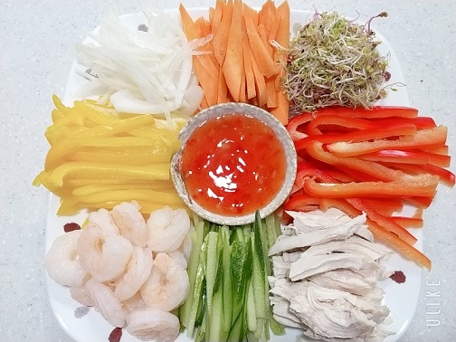

요리는 어렸을때부터 가졌던 취미로 평소 식사외에도 가끔 시간이 날때 재료를 사와 만들고싶었던 요리를 만들기도 합니다. 아래사진은 그중에서도 최근에 만들었던 월남쌈의 사진을 가져온 것입니다.

또한 평소에 요리를 할만한 시간이 없을땐 유튜브 영상을 자주 보곤하는데 아래 영상은 youtube에 '한세HANSE' 님의 디저트 영상으로 예전부터 즐겨보는 채널의 영상입니다.
홈으로